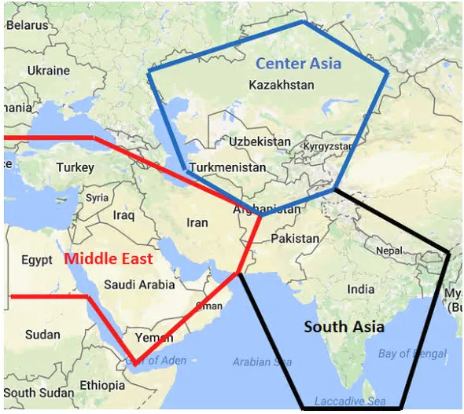
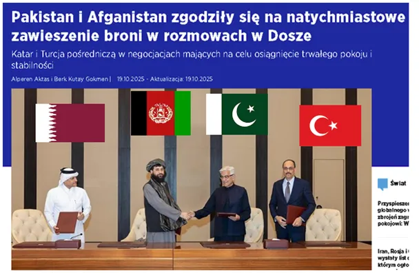
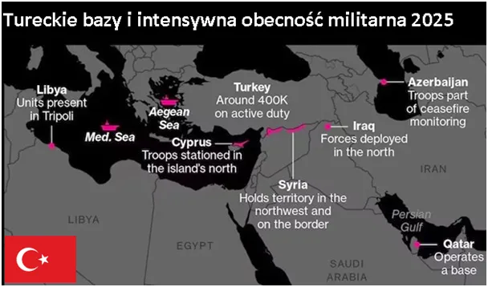

Azjatycki pokój - symboliczna fotografia.
Po Drugiej Wojnie Światowej w Europie zapanował pokój, ale reszta świata pogrążała się w chaosie i wojnie. Rzeczywiste zwycięstwo USA nie odbyło się nad Niemcami, ale nad poprzednim hegemonem, Wielką Brytanią.
O ile w Afryce prowadzono "dekolonizację", czyli wyczesywanie głównie brytyjskich koloni na rzecz marionetkowych państw, to w Azji rozgorzały wielkoskalowe konflikty. Na miejsce Francuzów do Wietnamu weszli Amerykanie z napalmem, gdzie zaangażowały się komunistyczne Chiny, co było dla nich katastrofalne gospodarczo. Koszmar upadku kontynentu dopełniały komunistyczne junty, takie jak w Kambodży.

Praktycznie do dziś kontynent ten jest niszczony konfliktami, co sprzyja jego rabowaniu. Kraje uwikłane w konflikty sprzedają za grosze swoje bogactwa naturalne za broń i polityczne wsparcie. Kraje naftowe cieszyły się spokojem za pokaźne udziały dla zachodnich koncernów i polityków. Pierwszą iskrą, która zmieniła wszystko była rewolucja w Iranie i przejęcie władzy przez religijny rząd w 1979 roku. Od tego momentu, Iran umieszczony centralnie na mapie południowej Azji, jest bolesną zadrą zachodu. Dzięki swym zasobom ropy finansuje wiele lokalnych ruchów wyzwoleńczych, a od dekady jest jednym z najbliższych sojuszników Chin, które kwitną na taniej irańskiej ropie.
Idea "Pasa i Szlaku " to chiński pomysł na powrót do bycia potęgą poprzez rozległy system wzajemnych korzyści gospodarczych nie tylko w Azji. Głównymi graczami w tej inicjatywie są Brazylia, RPA, Rosja (BRICS). Obecny rok 2025 nieustannie przynosi nam wielkie przesilenia i często nie zauważamy wydarzeń drugoplanowych, ale bardzo ważnych. Gdy patrzymy na Gazę i kruchy pokój wymiana ognia między dalekimi Pakistanem i Afganistanem pobrzmiewają jak za siódmą górą i siódmą rzeką. Tymczasem jest to obecnie środek powstawania nowego punktu ciężkości gospodarczej potęgi świata.

Pakistan jest mocarstwem atomowym, ciągle pod silnym wpływem zachodu, jednak bardzo blisko związany z Chinami jako korytarz transportowy z Chin do Iranu. Wojna w tym regionie to duży kłopot dla Chin, dlatego szybko udało się ją zażegnać. Na fotografii zwaśnione strony i ich rozjemcy. Nie ma tam żadnych zachodnich polityków, żadnego ONZ. Znamienna jest chwila, właśnie w tym roku PKB Turcji liczone siłą nabywczą (PPP) wyprzedza PKB Wielkiej Brytanii.

Indeks siły nabywczej oznacza potencjał własnego PKB do kupna dóbr we własnym kraju. Turcja właśnie wchodzi do elity państw zdolnych do finansowania większych projektów niż wielka Brytania, w tym militarnych.
Paweł Klimczewski